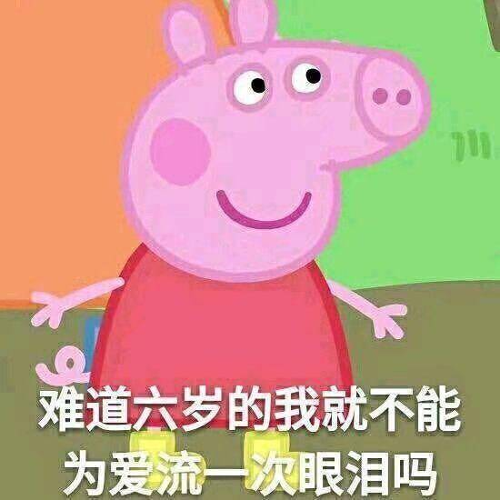
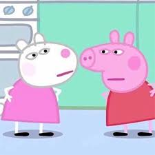
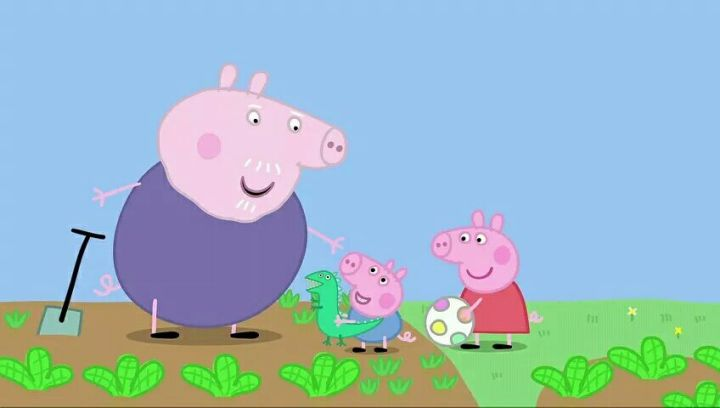
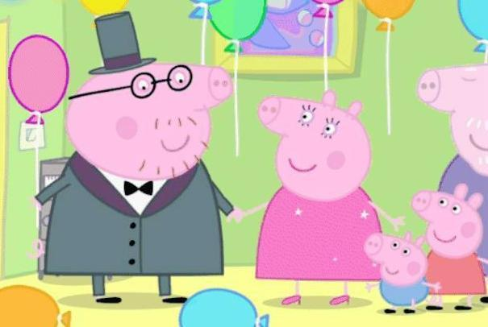

背景
《小猪佩奇》每集长度约5分钟，故事围绕一只名叫佩佩的拟人化猪女孩以及她的家庭和朋友。 她的朋友都是不同种类的哺乳类动物，如猫、狗、兔等，而且都跟她同龄。 而她弟弟乔治也有另一群与他同龄的朋友。 故事内容多数环绕日常生活，比如小孩们参加学前游戏班（playgroup）、游泳、探访祖父母和表亲、在游乐场玩耍、踏单车等等。  动画里的角色都像人一样穿着衣服，住在屋子里，有些也会开车，但同时仍保留其动物的特性。 例如，Peppa和她的家人说话时，不时会像猪一样嚄嚄叫，而其他动物角色也会发出各自的叫声，有些更会展现其他特性，比如兔子角色除了说话时会吱吱叫外，也喜欢吃红萝卜。 稍为例外的是兔子们住在山上的洞窟里，虽然他们的洞窟都像人类的屋子一样有窗户和家具。各种角色尴尬时都会脸红，而嘴巴都会表达悲伤、喜悦、愤怒、困惑等情绪。虽然动画里的哺乳类动物都是拟人化角色，其他动物却并非如此，例如鸭子、乌龟小提、鹦鹉Polly、金鱼小金等。 动画的旁白由John Sparke负责，他的旁白加强了剧情的喜剧效果，例如在不幸的事情发生（比如George开始哭闹）时加上一句「Oh，惨了！」，或者角色做出危险的行为（比如Peppa骑单车时不望着前方）时大喊「小心！」 第一季共52集于2004年5月31日起在英国第五台播放，而在美国，则于2005年8月22日在卡通频道的Tickle-U学前电视节目环节首播，其后于2007年12月和2008年1月在Noggin频道（后来的尼克幼儿频道（Nick Jr.））播放。在英国、葡萄牙、意大利、比荷卢、斯堪的纳维亚和澳洲也在Nick Jr.频道上播放。 第二季共52集于2006年9月4日起播放。 Cecily Bloom取代Lily Snowden-Fine成为Peppa的配音员，其他角色配音也稍有调动。第三季于2009年5月4日在英国第五台儿童节目《MilkShake》中播放，Peppa的配音员改为Harley Bird。
角色
剧中大部份未成年角色（乔治及同属猪类的堂姐弟除外）名字第一个字母皆与该动物英文名的第一个字母相同。 猪 佩佩（Peppa Pig）－动画的主人翁。她喜欢在泥巴水坑里跳上跳下、和她的泰迪熊Teddy玩耍（但却经常丢掉Teddy）、上学前游戏班和装扮。她跟她的弟弟George、猪妈妈和猪爸爸一起生活[5]。动画里没有确实交代Peppa的年龄，但于2004年播出的第一季第50集《我的生日会》（My Birthday Party）中，Peppa的生日蛋糕上有四枝蜡烛，或者显示Peppa当时四岁，而一篇2010年的BBC文章则指Peppa已经五岁[6]。角色分别由莉莉·斯诺顿-费恩（第一季）、西西莉·布莱姆（第二季）和哈莉·贝特（第三至五季）配音。 乔治（George Pig）－Peppa的弟弟。他出现于大部份集数，通常都拿着他的绿色玩具恐龙－「恐龙先生」（Mr. Dinosaur），口头禅是「Dine-saur」（发音不准确的「恐龙」）。 George经常哭闹，哭的时候总会出现像花洒的眼泪和特别的哭声（其实是剧中同一年龄层儿童的共同设定），而他哭的原因多半是被Peppa作弄。第二季第26集《George的生日》（George's Birthday）中，George的生日蛋糕上有两枝蜡烛，其他角色拿着的汽球上面也写着「2」，显示George可能为两岁。角色分别由奥利弗·美和爱丽斯·美配音。 猪妈妈（Mummy Pig）－Peppa和George的妈妈。她经常用家里的电脑工作，也曾经在第三季第13集《消防车》（The Fire Engine）中以消防员身份出现。实际也是一位预言家，在生活上经常提醒猪爸爸小心即将可能犯下的错误（例如爬树掉下来），虽然后者都总会自信地断言不会发生，但都总是立即应验。角色由摩云娜·宾斯配音。 猪爸爸/猪先生（Daddy Pig）－Peppa和George的爸爸。喜欢自夸。第四季第2集《新房子》（The New House）中显示他是一位建筑师。角色由理察·莱丁斯配音。 猪爷爷（Grandpa Pig）－猪妈妈的爸爸，猪爸爸的岳父，Peppa和George的外公。猪爷爷喜欢园艺和开船。他和狗爷爷虽然有过几次争执，不过两位是好朋友。他有一列名为歌楚德（Gertrude）的无轨火车。角色由大卫·加咸配音。 猪奶奶（Granny Pig）－猪妈妈的妈妈，猪爸爸的岳母，Peppa和George的外婆。爱好香水。她在家附近的果树园里种苹果树，又在后院种蔬菜。她也养了四只鸡。角色由法兰西斯·韦特配音。 猪叔叔（Uncle Pig）－猪爸爸的兄弟、猪婶婶的丈夫、Chloé和Alexander的爸爸。角色由本动画的旁白约翰·史巴克斯配音。 猪婶婶（Auntie Pig）－猪叔叔的太太、Chloé和Alexander的妈妈。角色分别由艾莉逊·斯诺顿（第一、二季）和茱迪·弗林（第三、四季）配音。 克萝依（Cousin Chloé Pig）－Peppa和George的堂姐、Alexander的姐姐。她与熊Belinda和松鼠Simon是朋友，但他们却喜欢作弄Peppa。 Chloé八岁，喜欢穿黄色的裙子。角色分别由埃露尔斯·美尔（第一至二季）、阿比盖尔·丹尼斯（第三、四季）和札拉·斯迪奇（第四季）配音。 Alexander（Baby Alexander Pig）－Chloé的弟弟。是一个婴儿，他说的第一个字是「泥坑」（puddle）。角色分别由奥利弗·美（第二季）、哈莉·贝特（第三季）和美妮·卓拉弗（第四季）配音。 姨姨多蒂（Auntie Dottie Pig）－Peppa和George的姨姥姥，姨姨多蒂没有在动画正式登场，只有在第四季第4集《梦幻精灵小马》（Horsey Twinkle Toes）里面猪妈妈提及她住在国外，并寄了一份包裹给Peppa和George，里面是一只有车轮的玩具马（Peppa和George给它起了个名字叫「梦幻精灵小马（Horsey Twinkle Toes）」）。由于未在动画中出现，所以没有配音员。  兔 蕾贝卡（Rebecca Rabbit）－Peppa的朋友和学前游戏班的同学，也是Richard、孪生弟妹Rosie和Robbie的大姐姐。角色分别由希素·鲁特（第一季）、贝顿·莲茜（第二季）和爱丽斯·美（第三、四季）配音。 理查（Richard Rabbit）－Rebecca的弟弟、孪生弟妹Rosie和Robbie的哥哥，也是George最好的朋友，也跟George一样有点爱哭，在好些集数中都和George一起哭闹。角色由苏儿·贝克配音。 兔子小姐（Miss Rabbit）－她似乎同时担当多份工作，包括巴士司机、超级市场店员、图书馆管理员、直升机驾驶员、消防员、冰淇淋小贩、鞋店店员、护士、博物馆售票员、瓷器店职员、月球上的杂货店店员、海洋馆售票员兼水池清洗兼纪念品售卖员、飞机服务员等等，并且也分别开店从事资源回收售卖圣诞树, 但她喜爱她的工作，并因此获「女王」授与奖章。她是兔妈妈的姊妹（外表及衣着上完全相同），Rebecca、Richard、Rosie和Robbie的姨姨。角色由莎拉·安·坚妮迪配音。 兔妈妈（Mummy Rabbit）－Rebecca、Richard、Rosie和Robbie的妈妈，也是兔小姐的孪生姐妹。角色分别由摩云娜·宾斯和莎拉·安·坚妮迪配音。 兔爸爸／兔先生（Daddy Rabbit / Mr Rabbit）－Rebecca、Richard、Rosie和Robbie的爸爸。他与猪爸爸和猫太太在一家高层写字楼工作，但也曾在某些集数里当过车站站长、博物馆馆长和冰淇淋小贩等其他工作。他是猪爸爸的好朋友。角色由约翰·史巴克斯配音。 兔外公（Grampy Rabbit）－Rebecca、Richard、Rosie和Robbie的外祖父、兔妈妈和兔小姐的爸爸。角色由拜仁·布拉斯特配音。 萝丝（Rosie Rabbit）－Rebecca和Richard的妹妹。她和孪生的Robbie在第四季第10集《兔妈妈的大肚子》（Mummy Rabbit's Bump）中出世。 罗比（Robbie Rabbit）－Rebecca和Richard的弟弟。他和孪生的Rosie在第四季第10集《兔妈妈的大肚子》（Mummy Rabbit's Bump）中出世。 绵羊 苏西（Suzy Sheep）－Peppa最要好的朋友和学前游戏班的同学。她也有一位名叫狮子Leo的虚拟朋友。她常穿粉红色裙子，也很常穿上护士服玩扮演游戏。 Suzy有时会显得有点专横，喜欢指点其他人做事，但她自己却觉得Peppa才是喜欢指点其他人做事的人。是班内唯一的单亲家庭儿童。角色由美格·荷尔配音。 羊妈妈／羊太太（Mummy Sheep / Mrs Sheep）－Suzy的妈妈，常穿深粉红色裙子的她是猪妈妈的好朋友。角色由黛比·麦当纳配音。 猫 Candy（Candy Cat）－Peppa的朋友和学前游戏班的同学，穿绿松色的裙子。角色分别由黛西·鲁特（第一季）、爱玛·韦斯顿（第二季）和札拉·斯迪奇（第三、四季）配音。 猫妈妈／猫太太（Mummy Cat / Mrs Cat）－Candy的妈妈、猪爸爸的同事。根据第三季第29集《仓鼠医生的乌龟》（Dr Hamster's Tortoise），她今年33岁。她常穿淡红色裙子。角色分别由摩云娜·宾斯（第二季）和莉娜·法尔萨德（第三、四季）配音。 猫爸爸／猫先生（Daddy Cat / Mr Cat）－Candy的爸爸。在第三和第四季中经常出场。常穿牛仔衬衫，身披深色的皮毛。 狗 丹尼（Danny Dog）－Peppa的朋友和学前游戏班的同学。角色分别由佐治·活福特（第一、二季）和贾顿·米尔斯（第三、四季）配音。 狗妈妈／狗太太（Mummy Dog / Mrs Dog）－Danny的妈妈。角色分别由黛比·麦当纳（第一季）、卡丽儿·韦克斯勒（第二季）和茱迪·弗林（第四季）配音。 狗爷爷（Granddad Dog）－Danny的爷爷。他是一名汽车技师，非常善于修理车子。他和猪爷爷是好朋友，虽然两人间中会争论谁的船比对方的好。角色由大卫·连杜配音。 狗爸爸／狗船长（Daddy Dog / Captain Dog）－Danny的爸爸。他是一名驾驶帆船环球旅行的船长。他是其中一名最迟在系列中亮相的角色，在第四季中段的《狗爸爸船长》（Captain Daddy Dog）才首次作为退役船长出现。角色由阿历山大·岩士唐配音。 马 皮卓（Pedro Pony）－Peppa的朋友和学前游戏班的同学。他戴眼镜、穿黄色夹克。喜欢睡觉，有时会有点善忘、冒失和迟缓，但对他有兴趣的事却很有研究，而且为人友善。在很多集数里他上学前游戏班都迟到了。在第四季第41集《Pedro迟到了》（Pedro is Late）中，Peppa亲了皮卓一下。他也常穿牛仔服饰，但他也经常穿错衣服。在第三季第45集《体操班》（Gym Class）里，他穿了超级英雄的装束去上体操班。角色分别由哈里逊·奥莱特（第一、二季）和史坦利·尼克勒斯（第三、四季）配音。 马妈妈／马太太（Mummy Pony / Mrs Pony）－皮卓的妈妈。她穿着一件深黄色裙子。角色分别由姬蒂·格列布（第一季）、玛德琳·摩亚（第二季）、莉拉·路易斯（第二季）、贾米玛·威廉斯（第三季）、莉娜·法尔萨德（第四季）和茱迪·弗林（第四季）配音。 马爸爸／马先生（Daddy Pony / Mr Pony）－皮卓的爸爸，是一位视光师。他跟皮卓一样戴眼镜、穿夹克，不过夹克是绿色的。角色由约翰·史巴克斯配音。 斑马 柔依（Zoë Zebra）－Peppa的朋友和学前游戏班的同学。她身上有黑白相间的斑纹，穿淡紫色裙子。在第二季第4集《泰迪熊去野餐》（Teddy's Day Out），柔依带着她的猴子布偶出现，布偶的名字就叫做「猴子」（Monkey）。角色由斯恩·泰莱配音。 斑马妈妈／斑马太太（Mummy Zebra / Mrs Zebra）－柔依、Zuzu和Zaza的妈妈，是位陶瓷匠，穿淡绿色裙子。角色由摩云娜·宾斯配音。 斑马爸爸／斑马先生（Daddy Zebra / Mr Zebra）－柔依、Zuzu和Zaza的爸爸，是位邮差。角色由大卫·加咸配音。 Zuzu和Zaza（Zuzu & Zaza Zebra）－柔依的一对孪生妹妹，也是George的朋友。她们都穿淡粉红色裙子。由于她俩年纪比乔治、理查和艾德蒙小，所以她们没有上学前游戏班，而是多数出现在柔依家里。两位角色皆由爱丽斯·美配音。 象 艾蜜莉（Emily Elephant）－Peppa的朋友和学前游戏班的同学。首次出现于第二季第2集《Emily Elephant》。她的嗓门在孩子中是最大的，她会将她的象鼻当手一样使用。在第二季第51集《留宿》（Sleepover）中可见她有一只玩具青蛙。角色由茱莉亚·摩斯配音。 艾德蒙（Edmond Elephant）－艾蜜莉的弟弟、George的朋友。和George、Richard、Zuzu、Zaza和Didier相较之下，艾德蒙十分聪明，似乎遗传自他的爸爸象医生。当其他孩子只会说单词的时候，他已经可以说完整句子了。而且他对许多方面都有丰富的知识。角色由尊尼·巴特拿配音。 象医生／象先生（Doctor Elephant / Mr Elephant）－艾蜜莉和艾德蒙的爸爸、象妈妈的丈夫。他穿着白色衬衣、打领结。从第二季第35集《牙医》（The Dentist）来看，他是一位牙医。角色由安迪·咸美顿配音。 象妈妈（Mummy Elephant）－艾蜜莉和艾德蒙的妈妈。穿紫红色裙子。 狐狸 弗瑞迪（Freddy Fox）－Peppa的朋友和学前游戏班的同学。很会闻气味寻人，最喜欢鸡蛋。 狐狸先生（Mr Fox）－弗瑞迪的爸爸，他是一间店的老板，而店里什么都卖。有时他会和弗瑞迪，开着货车到处去贩售。 狐狸小姐（Mrs Fox）－弗瑞迪的妈妈，穿深蓝色裙子。她是一位护士，在医院里工作。
核心
小猪佩琪就是那个平凡家庭中长大的，没有什么特别的优点，却异常的惹人喜爱的小姑娘。 个性。这个片子最适合的是3岁到6岁之间还没有上小学的孩子们观看。每个孩子都在这期间树立其他们独特的性格。佩琪喜欢交流、情绪化、乐观，有礼貌、爱交友，甚至她对朋友的朋友也保持一种谦逊。 她的弟弟乔治是那种隔壁家爱闹腾的熊孩子，他天生的有一种让想象力变成现实的能力，崇尚勇力，却也勇敢机智。还有些内秀~！十分的可爱。 还有慢半拍的佩德罗，有利落的丹尼，内向的艾米丽，小聪明的苏西等等！每个人物都具有个性，却并不会让人感觉尖锐。完整的保留了个性的美好。  启蒙。片子轻松愉快中让孩子体会了很多东西，却不让人有说教的感觉。比如泥坑，一般的大人嫌弃脏不准孩子接触。可是人是从田园中走出来的，对泥土有天生的喜爱。更不用说爱尔兰人天生的爱在泥里打转。 解放天性是这个片子潜移默化的教育；比如说秘密，孩子在这个时期已经开始明白有些事情是独一无二的，不能与人分享的。片子对那些无伤大雅的小事情，是可以和好朋友分享的，同时分享秘密也让大家彼此更加亲密。 孩子的秘密其实拥有吸引人的特点。成人就不会那么容易敞开心扉。甚至有些大人会错误的引导孩子。不能体会那种分享的喜悦；比如说画画。大人并不能告诉孩子什么是画画，而是告诉你画画是一种技能。 动画片很好的告诉了孩子，什么是画画。简单的图形，简单景物，如果包含一些突如其来的巧合，让画画成为一种独特记忆。这是动画片创作者的神来之笔。 爱与被爱。说实话，能用一部动画能将这个主题体现出来的人，我都认为是拥有大师一般的水平。而动画用了很多篇幅去体现亲情友情爱情（当然是父母、爷爷奶奶之间的那种）用一种不同于成人世界的封闭的笔调，去描绘大自然不同物种的那种天然的感情。 比如在朋友家过夜，虽然大家都很开心，但这种开心不能破坏主人家的正常生活。比如说生病，自己生病了有医生会救治，而医生也会生病，也要大家去关爱。又比如说猪妈妈明显是一个女强人，但她总是能将自己隐藏在猪爸爸之后，强调出爸爸的优秀。 还有那些憨态可掬的鸭子们，每次都能得到一家人很好的款待。不因为她们非我族类就用大自然法则去对待它们。 这些高贵的品质与其说是理想，不如说作者拥有一颗完整的童心。要让这种人类最高贵的品质传递给孩子们。
摘选
无论是踩泥坑，滑冰，骑自行车，猪爸爸永远跟小孩能玩到一起，而且在小孩碰到困难时，能用自己的方式开解他们。 有一集教佩奇滑冰的时候佩奇摔了，很沮丧地说“我再也不滑冰了”，猪爸爸这时候用自己的摔倒来告诉佩奇，大人也会摔跤，摔跤并不可怕，重新站起来就好！最重要的一点是，猪爸爸猪妈妈非常相爱！  猪妈妈过生日的时候，猪爸爸和孩子一起折腾了一天，为妈妈准备生日惊喜，又是早餐，又是做蛋糕。最后猪爸爸送给妈妈的礼物是两个人的单独约会。看着爸爸妈妈穿戴一新去赴浪漫的约会，孩子心里也会埋下一颗种子，这对他们未来自己建立的家庭提供了一个模仿的范本，核心就是父母的互相尊重和彼此相爱。 对于孩子来说，爸爸爱妈妈，会给他们最大的感全感。